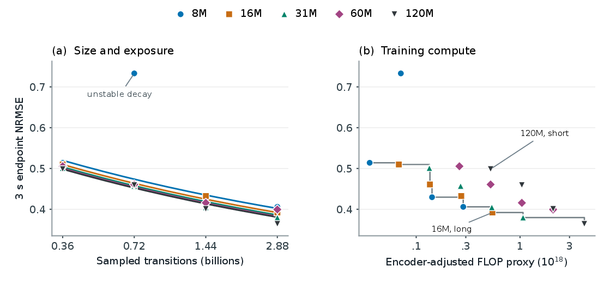

Scaling Quadruped World Models
A 120-Million-Parameter Predictive Model of the Unitree Go2
GÖDELMACHINES3D pose overlay
Rotate the three poses together. The dark skeleton comes from the Go2’s joint encoders and IMU. Orange and teal show where the 120M model and MuJoCo place the same joints and feet under the recorded commands.
| Recorded trial | 120M neural | MuJoCo |
|---|---|---|
| 2 m walk · 5.08 s | 2.76 | 3.65 |
| StaticWalk · 1.30 s | 6.20 | 18.27 |
| TrotRun · 2.00 s | 8.09 | 44.15 |
Each row is one recording. We pool the squared 3D distances for all four foot centers across forecast frames, then take the square root. The initial pose is shared and excluded.
All layers use the robot’s measured heading, controller odometry and reported body height. Each layer supplies its own tilt and 12 joint angles. Foot positions come from forward kinematics at 50 Hz, so their separation measures limb and tilt error under that shared placement. The traces follow the selected foot center over the preceding 0.4 s. The floor grid is spaced at 2 ft. Unitree Go2 URDF
Abstract
How do model size and training exposure affect a quadruped’s ability to forecast motion from joint commands? Five recurrent predictors of the Unitree Go2, ranging from 8M to 120M parameters, forecast 30 joint and body measurements at 50 Hz. Across four training budgets, one scaling law describes three-second prediction error when recorded terrain scans are available. Withholding the final exposure doubling gives a mean relative prediction discrepancy of 2.9%.
Removing the scan produces a model that can run from joint targets and proprioceptive history alone. Updating its input projection improves the 120M model’s one-second error on held-out flat ground from 0.831 to 0.613. At three seconds the error changes from 0.948 to 1.009. On nine physical Go2 trials, the 8M model gives the lowest pooled joint-angle error among the five adapted sizes. On the four walks commanded at 0.5 m/s, the 120M model gives the lowest error.
Predicting the next doubling
Five model sizes and four training budgets yield 20 checkpoints. With the largest budget at each width withheld, the fitted law predicts three-second endpoint error with 2.9% mean relative discrepancy. Carrying the preceding scores forward gives 7.4%.
L3s = 0.202 + 0.00775 n−0.863 + 0.229 d−0.246
Here n is size in units of 30M per-step parameters and d is exposure in billions of sampled transitions. The fit uses recorded terrain scans in simulation.

Replaying the robot’s commands
The stock controller runs on the real robot once. Each predictor receives its published joint targets, and the encoders and IMU supply the reference. Across nine default-mode runs, the smallest adapted model has the lowest pooled joint-angle error. The ordering changes on the four faster walks.
| Predictor | Nine SDK runs | Four at 0.5 m/s |
|---|---|---|
| 8M adapted | 0.0566 | 0.0512 |
| 120M adapted | 0.0641 | 0.0461 |
| MuJoCo, recorded gains | 0.0586 | 0.0729 |

On the filmed walk above, the stationary foot-contact centroid moved an estimated 2.335 m on the two-foot grid. Settled onboard odometry was 2.035 m. The measurements refer to different points on the robot.
Each clip shows one acknowledged SDK mode request. The 120M model receives the published joint targets. MuJoCo also receives the recorded gains, velocity targets, and feedforward torques. Both replays show pose in place. The gait labels come from the SDK requests. Independent footfall classifications are unavailable.
Eight gaits in simulation
MuJoCo and the T2 policy supply a three-second reference for each gait. The adapted 120M model receives the joint targets from that same trajectory. Trot gives a mean body-up error of 0.52°. In pronk, the simulator overturns and the error reaches 69.52°.

BibTeX
@misc{kompella_scaling_go2_2026,
title = {Scaling Quadruped World Models: A 120-Million-Parameter Predictive Model of the Unitree Go2},
author = {Kompella, Ramakrishna},
year = {2026},
institution = {Gödel Machines}
}